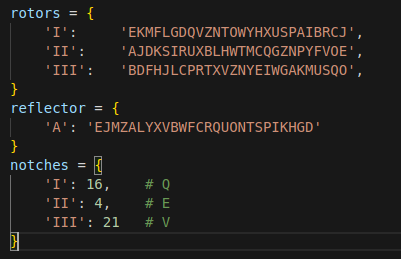

Starting with a GUI is a great way of understanding the machine in its intricacy. It also
removes the need for physical hardware, allowing us to focus on logic and design. We, however,
can later add a physical interface to the GUI.
The GUI is coded in Python using the PySimpleGUI library.
We would first start with a simple GUI that allows users to input a message, select the rotor settings, and then encrypt the message.
The sample of the GUI is shown below:
To begin with, we need to initialize the GUI with necessary components,
such as the rotor permutations, reflector settings, and the notches.
Below is the code snippet:

Next step would be to include all the functions that we might use. Those include inverting wiring, encryption logic, parsing plugboard and stepping through rotors.
When we press "Send" on our Enigma GUI, each letter goes through a transformation — just like in the real Enigma machine. Let's unpack the core logic behind this encryption process without getting buried in code.
First: Reversing the Rotors — invert_wiring(wiring)
Rotors in the Enigma machine are basically scrambled alphabets. For encryption, we go forwards through the rotors and then backwards after reflection. But rotors don’t naturally come with a "reverse gear" — so we build one.This function helps us do that. It creates the inverse mapping of a rotor. Imagine this: If rotor I maps A → E, then the inverse should make sure E → A. This function figures out the reverse lookup for every letter.
Setting Up the Plugboard — parse_plugboard(raw)
Before the rotors even touch your input, there's the plugboard. You can think of the plugboard as a simple wire-swapping panel. If you connect A to B, then every A typed becomes B, and every B becomes A.This function takes a string like "A-B, C-D, M-N" and:
Rotors Start to Turn — step_rotors(positions, rotor_labels)
The Enigma machine isn’t just about static substitution — the real magic is that the rotors rotate after each letter, changing the encryption every time.
Here’s how rotor stepping works:
This is called double stepping, and it’s why the Enigma was so powerful — the encryption changed with every letter typed.
The Encryption Journey — enigma_encrypt_char(c, positions, plugboard)
Let us walk through what actually happens to a letter like H when you hit "Send":1. Plugboard Preprocessing
We check if H is plugged to another letter (say M). If yes, we swap it.2. Rotor Forward Pass
The letter is passed through 3 rotors:So, the letter has gone through:
Rotor 1 → Rotor 2 → Rotor 3
3. Reflection
The reflector bounces the signal back. If the character was J, maybe it now becomes P.4. Rotor Reverse Pass
Now we go backwards:Rotor 3 (inverted) → Rotor 2 (inverted) → Rotor 1 (inverted)
To do this, we use that invert_wiring() function we saw earlier.
5. Plugboard Postprocessing
Finally, we check the plugboard again. Maybe that reflected output is plugged into something else. We swap it one last time.Now we get our encrypted output.
,
Now our task would be to display this output on the GUI. The layout function of PySimpleGUI helps.
GUI Logic and User Interactions
Window Setup
window = sg.Window('Enigma Machine Simulator', layout, finalize=True)Event Loop
while True:
event, values = window.read(timeout=20)This loop keeps the GUI responsive. If the window is closed, the loop exits. If the user clicks Send, encryption begins.
Handling the Send Event
When the user presses Send:
- Input message and rotor positions are read
- Plugboard is parsed
- Each letter is encrypted and rotors are stepped
- The rotor positions are updated in the GUI
- The result is shown in the output display
Rotor Controls Sync
To keep rotor controls intuitive:
- Typing a letter updates the listbox
- Selecting from the listbox updates the input field
Serial Reset (Optional)
# if event == 'rtg' and values['r_en']:
# ser.send_break()This is a placeholder to reset connected hardware like a PIC or Arduino, if you’re using one.
Exiting
window.close()Shuts the simulator window cleanly.
Conclusion
The simulator brings the mechanics of the Enigma machine to life — from plugboard swaps to rotor shifting and reflector bounces — all wrapped in an interactive and educational GUI.
Try typing “AAAAA” and watch how the output changes with each keystroke due to rotor movement!
Sample GUI: